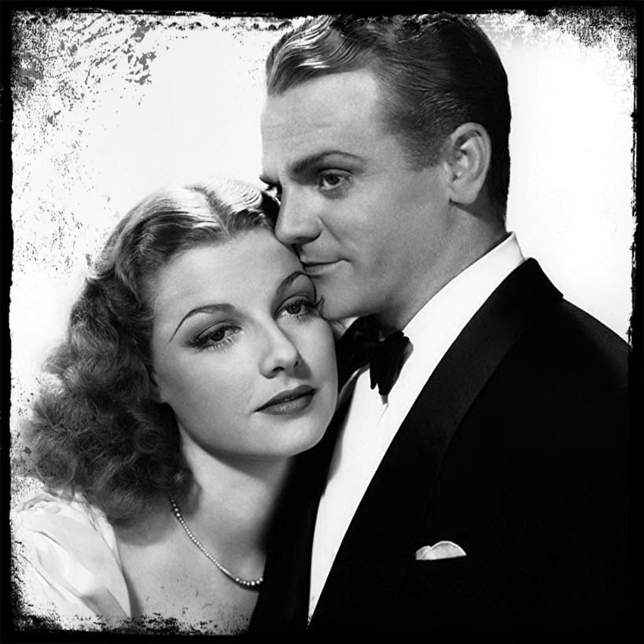

Cine negro Arquetipos de personajes
Ganster
Little Caesar 9 de enero de 1931
- Dirigida por Mervyn LeRoy
- Basada en la novela de W. R. Burnett
- Narra el ascenso y declive de Rico Bandello
Scarface 31 de marzo de 1932
- Dirigida por Howard Hawks
- Basada en la novela de Armitage Trail
- Sigue el ascenso y descenso de "Tony"
The Public Enemy 23 de abril de 1931
- Dirigida por William A. Wellman
- Basada en la novela Beer and Blood
- Narra la historia de Tom Powers y Matt Doyle

Angels with Dirty Faces 26 de noviembre de 1938
- Dirigida por Michael Curtiz
- Historia de Rowland Brown
- Narra la vida de Rocky Sullivan, toca temas sociales
I Am a Fugitive from a Chain Gang 10 de noviembre de 1932
- Dirigida por Mervyn LeRoy
- Historia de Robert Elliott Burns
- Un inocente es acusado de un crimen y va a prisión
Detective
The Maltese Falcon 3 de octubre de 1941
- Dirigida por John Huston
- Basada en la novela de Dashiell Hammett
- Sigue la aventura del detective privado Sam Spade

Laura11 de octubre de 1944
- Dirigida por Otto Preminger
- Basada en la novela de Vera Caspary
- Mark McPherson investiga la muerte de Laura Hunt
The Big Sleep 23 de agosto de 1946
- Dirigida por Howard Hawks
- Basada en la novela de Raymond Chandler
- Philip Marlowe es parte de una trama enrevesada
Lady in the Lake 23 de enero de 1947
- Dirigida por Robert Montgomery
- Basada en la novela de Raymond Chandler
- El detective Phillip Marlowe la protagoniza
Chinatown 20 de junio de 1974
- Dirigida por Roman Polanski
- Historia de Robert Towne
- Jake Gittes descubre corrupción, incesto y asesinato
Femme Fatale
Double Indemnity27 de septiembre de 1944
- Dirigida por Billy Wilder
- Basada en la novela de James M. Cain
- Phyllis está detrás de la muerte de su marido
The Killers28 de agosto de 1946
- Dirigida por Robert Siodmak
- Basada en la novela de Ernest Hemingway
- Trama llena de los engaños de Kitty Collins
The Postman Always Rings Twice 9 de mayo de 1946
- Dirigida por Tay Garnett
- Basada en la novela de James M. Cain
- Cora, un romance furtivo y la muerte de su marido.
The Lady from Shanghai24 de diciembre de 1947
- Dirigida por Orson Welles
- Historia de Orson Welles, entre otros
- Michael O'Hara conoce a Elsa
Vértigo 9 de mayo de 1958
- Dirigida por Alfred Hitchcock
- Basada en la novela de Boileau y Narcejac
- «Scottie» se obsesiona con Madeleine
Noir moderno
Harper 23 de febrero de 1966
- Dirigida por Jack Smight
- Guión de William Goldman
- Lew Harper es contratado por la Sra. Sampson
Scarface 1 de diciembre de 1983
- Dirigida por Brian De Palma
- Guión de Oliver Stone
- «Tony» Montana llega a los Estados Unidos
Once Upon a Time in America17 de febrero de 1984
- Dirigida por Sergio Leone
- Guión de Sergio Leone
- Historia de Noodles y sus amigos de la banda
Basic Instinct20 de marzo de 1992
- Dirigida por Paul Verhoeven
- Guión de Joe Eszterhas
- Una escritora erótica seduce a un detective
Gone Girl 2 de octubre de 2014
- Dirigida por David Fincher
- Basada en la novela de Gillian Flynn
- Un hombre reporta que su esposa desapareció